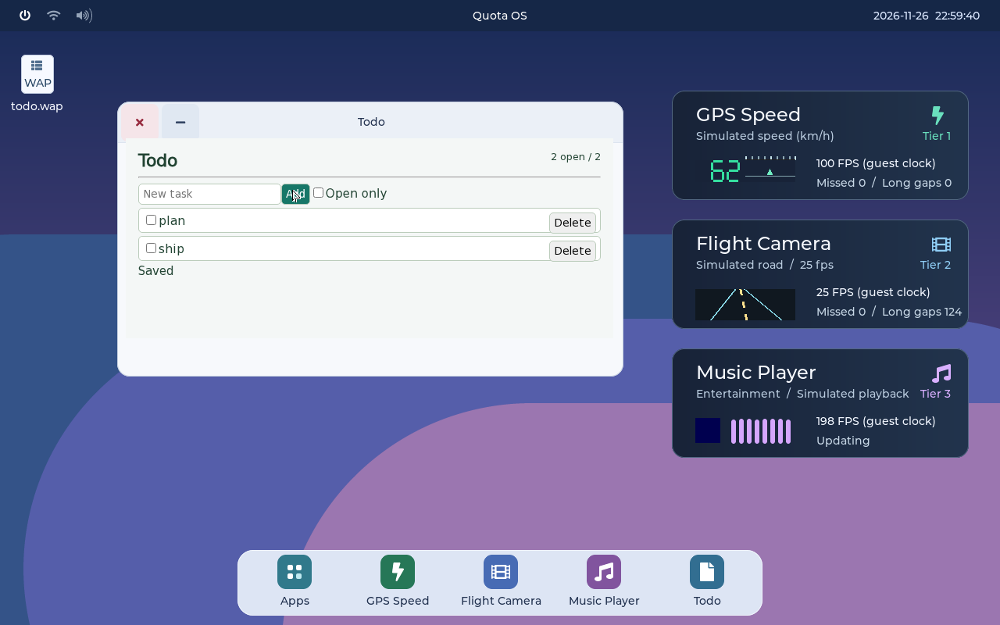

一级
厂商预留
GPS Speed 和系统定时服务使用固定 CPU 时间槽。即使桌面任务忙等，关键任务仍按槽表获得执行机会。
面向 ARM64 的资源配额操作系统
Quota OS 是一款以资源配额为核心的操作系统。内核为关键任务预留执行时间，按容量接纳应用，并将剩余资源交给普通任务共享。


内存列为普通及 macOS 启动时的来宾总内存，镜像列为未压缩启动文件的大小。用 ls 和 ls / 列出 ext4 根目录，用 cat /文件名 读取当前根盘的文本文件。
示例应用GPS Speed、Flight Camera 和 Music Player 的卡片右侧标出各自的级别。Flight Camera 以 25 FPS 为目标模拟车道动画。
一级
GPS Speed 和系统定时服务使用固定 CPU 时间槽。即使桌面任务忙等，关键任务仍按槽表获得执行机会。
二级
Flight Camera 声明最低需求。用户同意且容量足够才启动，内核按周期兑现已准入的最低配额。
三级
Music Player 和桌面交互共享剩余 CPU。内核限制总池，池内应用各自承担竞争和延迟。
CLI 提供串口命令行，Test 作为独立 EL0 应用按需运行。GUI 增加 LVGL 原生桌面，Web UI 在此基础上增加由 Blink、V8 和 Node.js 组成的三级 WAP 运行时。 Touch UI 提供 900 × 1600 竖屏、全屏应用和底部手势栏。
四个发行版均支持运行由 C 代码编译的 Quota OS 命令行可执行文件。在 CLI 版，通过串口进入 Shell 运行程序；在 GUI、Web UI 和 Touch UI 版，从桌面打开 Shell 运行程序。
启动 · 通过单核 Cortex-A35 QEMU 进入串口命令行。
开发 · 用 C 编译独立 Test，以二级或三级 EL0 应用运行。
验证 · 检查配额，并验证笔记在冷启动后能读回。
启动 · 启动 1280 × 800 的 LVGL 原生桌面。
开发 · 用 C 和 LVGL 编写原生界面和应用。
验证 · 在 Apps → Test 检查准入、配额和仪表帧间隔。
启动 · 启动带三级 WAP 运行时的 LVGL 桌面。
开发 · 用 HTML、CSS、JavaScript 和可选的 Node.js 后台编写 WAP 应用。
验证 · 在 Files 打开示例，保存任务并在冷启动后读回。
900 × 1600 竖屏应用。底部 Bar 单击或上滑一次返回，双击或连续上滑两次回主屏，并保留应用现场。
已用 QEMU 单指模拟验证，实体屏和多点触控待验证。
Quota OS CLI 016 | ARM64 | 4096 KiB RAM
quota> run Test
Test: EL0 completed
quota> run Test t2
Test: EL0 completed
quota> events
period=38 tier1_misses=0 tier2_short=0 tier3_over=0

同样是预留 CPU 时间，给一组线程分配最低份额、给单个线程设置周期预算、为整个分区排定时间窗，解决的是不同的问题。下表从分配对象和运行规则比较五种做法。
| 系统与机制 | CPU 时间分给谁 | 预算怎样生效 |
|---|---|---|
| Quota OS | 按应用级别分配 | GPS Speed 使用固定时间槽。Flight Camera 经用户批准且容量足够时获得周期预算。Music Player 与其他三级应用共享有总上限的剩余时间。 内核配额实现 |
| QNX APS | 同一分区内的一组线程 | 为分区配置最低 CPU 比例。调度器在滑动时间窗口内核算用量；其他分区用不完预算时，有工作可做的分区可以多运行。 QNX 调度说明 |
| seL4 MCS | 可绑定到线程的调度上下文 | 每个上下文指定预算和周期。客户端通过同步 IPC 调用被动服务时，可借出自己的调度上下文，服务执行时间计入调用方预算。 seL4 调度上下文教程 |
| Linux SCHED_DEADLINE | 申请截止期调度的线程 | 线程声明运行预算、相对截止期和周期。内核检查带宽后决定是否准入，按调度截止期安排执行；在默认策略下，预算耗尽的线程须等待补充。 Linux 内核调度文档 |
| VxWorks 653 | 预先配置的应用分区 | 模块按时间表轮流运行各分区。窗口内由分区调度器按优先级选择任务；窗口结束后，模块切换到表中的下一个分区。 Wind River 时间分区说明 |
下方历史测试在单核 ARM64 QEMU 中记录调度周期和来宾帧缓冲提交。各系统在同一硬件上的显示延迟仍待测量。
本次实验使用单核 ARM64 QEMU，GUI 配置 64 MiB，Web UI 配置 1 GiB，各冷启动 100 次。当前 Web UI 默认使用双核、512 MiB。每轮让三级任务忙等 10 秒，同时施加内存和磁盘压力，记录 GPS Speed 和 Flight Camera 每次写完来宾帧缓冲的时刻。
| 当次测试配置 | 通过轮数 | GPS Speed 帧数 / 最大间隔 | Flight Camera 帧数 / 最大间隔 |
|---|---|---|---|
| GUI · 64 MiB | 100 / 100 | 100,359 / 10.000 ms | 25,091 / 40.000 ms |
| Web UI · 1 GiB | 100 / 100 | 100,755 / 10.000 ms | 25,184 / 40.000 ms |
按 QEMU icount 虚拟时钟的原始 tick 比较，200 轮中没有一次相邻提交间隔超过对应的 10 ms 或 40 ms 门限。两版均无提交截止期漏期、二级预算欠付或三级总池超限。测量终点是来宾帧缓冲写入完成，宿主窗口呈现和物理屏幕刷新延迟仍待测量。
如果希望从仓库启动，先安装 Git 和支持 ARM64 系统模拟的 QEMU，再运行以下命令。
git clone https://github.com/leiquan/Quota-OS.git
cd Quota-OS
bash tools/run-files.sh运行 900 × 1600 竖屏版，请按 Touch UI 构建与启动指南从源码构建。
demo.c 并按回车。等到显示已保存，再打开 Apps → Shell。ls，确认列表里有 demo.c。如果用了别的文件名，先输入 cc 查看对应的编译命令。Compiled demo.c to hello.cap，再运行。成功时输出 Hello, Quota OS!。int main(void) {
puts("Hello, Quota OS!");
return 0;
}cc demo.c -o hello.cap
./hello.cap当前内置编译器支持上面这种 C 子集。保留示例结构，暂时省略头文件。Shell 将程序按三级启动。若编译失败，回 Notes 核对代码和保存的文件名。


Web UI 保留原生桌面，WAP 应用在三级共享池内运行。Blink 渲染 HTML 和 CSS，V8 执行页面 JavaScript，可选的 Node.js 进程处理后台逻辑。页面与后台使用同一套系统 V8 构建。
todo.wap，再从 Files 双击打开 Todo。Saved 后退出 QEMU。用同一镜像和数据盘重启，再打开 Todo，核对任务与完成状态。examples/todo/ 的三份源码改起。重打包并替换内置的 todo.wap 后，重新构建镜像。核对 WAP 包时，确认 app.json 和 app.html 位于 ZIP 根目录，按需加入 app.js。ZIP 使用存储模式，扩展名为 .wap。如果冷启动后读不到原文，确认首次保存显示了 Saved，且第二次使用同一数据盘。
在装好 Homebrew LLVM 和 LLD 的 macOS 上，从仓库根目录执行以下命令。QEMU 使用单核 Cortex-A35 和 64 MiB 内存运行构建出的内核。
bash tools/build-lvgl-macos.sh
QUOTA_KERNEL=build/quotaos-lvgl.bin bash tools/run-files.sh